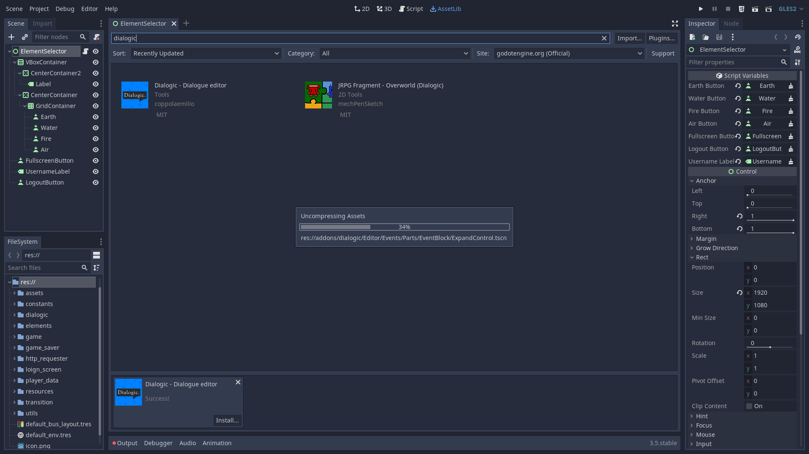
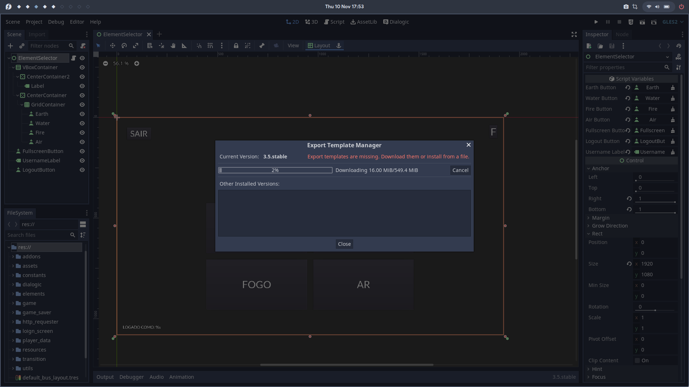

Alfabetiza
Este é um web-livro dedicado a toda a documentação do projeto Alfabetiza, um jogo com o propósito de alfabetização de crianças na língua portuguesa.
Ele inclui changelogs das versões, assim como a documentação do jogo.
Documentação
Este capítulo se dedica à documentação geral do jogo. Qualquer informação relevante sobre o processo de uso e modificação do projeto ficará descrito aqui.
Clonando o projeto
A primeira coisa a fazer é clonar o repositório do projeto em sua máquina. Para isso, basta acessar este link, clicar no botão azul escrito Clone e clicar em Download zip. Depois, basta extrair o arquivo .zip em algum lugar em seus arquivos.
Alternativamente, é possível apenas rodar o seguinte comando para clonar com git:
git clone https://gitlab.com/pedrotrschneider/alfabetiza-godot.git
Configuração da Godot
A Godot é a engine utilizada no desenvolvimento do Alfabetiza.
É a maior engine de desenvolvimento de jogos de código livre que temos hoje em dia, e é largamente utilizadas por desenvolvedores no mundo todo.
Instalando a Godot
Para realizar qualquer mudança no projeto, é necessário possuir o executável da Godot Engine no seu computador. Modficar o código fonte manualmente é fortemente não recomendado.
O projeto foi feito com a versão 3.5-stable da engine, que não necessariamente é a versão mais atual.
Para baixar o executável da Godot nessa versão específica, é possível acessar este link. Como a Godot roda em várias plataformas, há vários arquivos para baixar neste link, mas os mais importantes são:
Godot_v3.5-stable_x11.32.zippara Linux 32 bitsGodot_v3.5-stable_x11.64.zippara Linux 64 bitsGodot_v3.5-stable_win32.exe.zippara Windows 32 bitsGodot_v3.5-stable_win64.exe.zippara Windows 64 bitsGodot_v3.5-stable_osx.universal.zippara OSX (MacOS)
Com qualquer um desses executáveis no sistema operacional correspondente é possível exportar para qualquer plataforma. Não é necessário rodar a Godot numa plataforma específica para exportar para ela.
Os arquivos .zip contém um executável para a plataformam específica, e, após extrair, pode ser executado normalmente. A tela que se abrirá será esta:
Importando o projeto na Godot
Tendo o executável da Godot, o próximo passo é importar o projeto para acessar a engine:
-
Abra a godot.
-
Se aparecer algum pop-up falando que você não possui nenhum projeto, clique no botão
Cancel.
- No canto direito, no meio, clique no botão
Import.
- Um pop-up pedindo o caminho do projeto irá aparecer. Clique no botão
Browse.
- Navegue para o local onde o projeto foi clonado anteriormente, entre na pasta
projecte selecione o arquivoproject.godotdando dois cliques nele, ou clicando no botãoopenapós selecionar.
- Fazendo isso, o explorador de arquivos deve fechar, e um ícone verde deve aparecer ao lado do botão
Browse. Se esse for o caso, clique no botãoImport & Edit.
- Se tudo der certo, você verá essa tela:
E assim, o projeto está importado! Das próximas vezes que você abrir a Godot, o projeto já estará na tela inicial da lista de projetos e poderá ser aberto por lá.
Baixando o plugin Dialogic
A Godot é distribuída de forma modular para que o executável não fique muito grande. Por isso, há um série de plugins disponíveis a serem usados, alguns oficiais e outros feitos pela comunidade.
O projeto Alfabetiza utiliza um desses plugins, chamado Dialogic, para lidar com o sistema de diálogos do jogo. Ele precisa ser instalado para que as exportações corram bem.
- Clique no botão
AssetLibno canto superior central da tela
- Digite
dialogicna barra de busca e clique na opção de nomeDialogic - Dialogue Editor
- Na nova janela que se abrirá, clique em
Dowload
- Após o download ser finalizado, uma nova janela se abrirá mostrando os arquivos que foram baixados. Clique em
Install
- Espere o plugin ser instalado

- Se tudo der certo, deve aparecer uma janela falando sobre o sucesso da instalação. Clique em
Ok
- Agora, precisamos ativar o plugin. Clique no botão
Projectno canto superior esquerdo
- Clique em
Project Settings
- Clique em
Plugins
- Ative o plugin do
Dialogicclicando na caixa ao lado da palavraEnabled(ela deve ficar marcada e azul como na imagem abaixo)
Com isso, o plugin foi instalado e ativado corretamente!
Baixando os Export Templates
Para ser possível exportar o projeto da Godot para várias plataformas, são necessários os Export Templates. Para baixá-los, siga esses passos:
- Clique no botão
Editorno canto superior esquerdo
- Clique no botão
Manage Export Templates
- Na janela que aparecer, clique no botão
Download and Install
- Irá se abrir uma nova janela com uma barra de progresso. Basta esperar os arquivos terminarem de serem baixados.

- Quando o download terminar, basta clicar no botão
Closee estará tudo certo.
Caso queira saber onde esses arquivos foram colocados, clique no botão Editor e depois clique no botão Open Editor Data Folder e um explorador de arquivos irá se abrir na pasta. Os export templates foram baixados dentro da pasta templates.
Exportando as builds
Além dos Export Templates, no repositório clonado temos também os Export Presets, que contém as informações necessárias para exportas especificamente o projeto Alfabetiza. Usando esses presets, exportar para qualquer plataforma fica muito fácil.
Para qualquer plataforma, o começo do processo é o mesmo:
- Depois de abrir o projeto, clique no botão project.
- Clique no botão export
Se abrirá a janela de selecão de Export Presets.
Agora, siga os passos específicos de cada plataforma.
Exportando para web (HTML5)
- Clique no item que diz
HTML5 (Runnable)e clique no botãoExport Project.
- Se abrirá uma janela de explorador de arquivos. Navegue até a pasta em que deseja ter os arquivos da build de web e clique no botão
Save. (Caso a caixa de seleção que dizExport With Debugesteja marcada, desmarque ela antes de clicar em salvar).
Se tudo correr bem, a janela irá se fechar e os arquivos HTML/JavaScript/CSS estarão prontos na pasta selecionada.
Exportando para desktop (Windows/Linux)
O processo será o mesmo para gerar builds de Linux ou Windows.
- Clique no item que diz
Linux/X11 (Runnable), ouWindows Desktop (Runnable)
- Se abrirá uma janela de explorador de arquivos. Navegue até a pasta em que deseja ter os arquivos da build de desktop e clique no botão
Save. (Caso a caixa de seleção que dizExport With Debugesteja marcada, desmarque ela antes de clicar em salvar).
Se tudo correr bem, haverá um executável (.x86_64 para Linux, ou .exe para Windows) na pasta que foi selecionada durante o processo.
Exportando para Android
Instruções de exportação para Android em breve
Modificando o projeto
Na grande maioria das vezes, as únicas modificações que o projeto requerem são relacionadas à exportação das diferentes versões do jogo. Se este for o caso, todas as configurações podem ser facilmente acessadas a partir da tela inicial da Godot, logo após abrir o projeto.
- Após abrir o projeto, comece clicando no nó de nome
InitLoader.
- Dessa forma, no menu à direita, novas opções surgirão, sendo essas as relevantes para esta seção:
- Na opção
Login Typepodemos selecionar o tipo de login que queremos utilizar para o jogo.
As opções disponíveis são:
No Login: Sem nenhuma forma de loginLocal Login: Login em uma instância do servidor rodando localmente (geralmente utilizada para testes)Server Login: Login em uma instância rodando em um servidor remotamente (geralmente utilizada para releases oficiais)Guest Login: Login em uma instância rodando em um servidor remotamente, sem necessidade de ter um login já criado para utilizar (geralmente utilizado em situações em que se quer deixar disponível uma demonstração do jogo publicamente, e ainda coletar os dados de desempenho das pessoas que utilizarem essa versão)
- Na opção
Server URLpodemos especificar a URL do servidor que queremos utilizar remotamente. Essa será a URL utilizada para fazer as chamadas ao servidor nos tipos de loginServer LogineGuest Login.
- Na opção
Local URLpodemos especificar a URL do servidor que queremos utilizar localmente. Essa será a URL utilizada para fazer as chamadas ao servidor no tipo de loginLocal Login.
Changelog das versões
Esse capítulo se dedica a listar as mudanças presentes em cada versão liberada do jogo.
Entendendo os números das versão
Esse documento se dedica a explicar o sistema de numeração de versões que eu adotei para o projeto.
Primeiro número - 0.x.xx.xx.xx.x
O primeiro número representa as versões majoritárias do projeto. Uma mudança no primeiro dígito do número de versão representa uma grande mudança na forma como o aplicativo funciona, ou a finalização de uma parte importante do projeto.
Por exemplo, se o primeiro número da versão é 0, isso significa que o projeto ainda não chegou ao ponto em que eu estou satisfeito de chamar de "primeira versão", ou seja, a visão inicial do aplicativo ainda não foi realizada. Quando isso ocorrer, o primeiro número da versão mudará para 1. Se, um dia, ocorrer uma mudança muito grande na forma como o jogo funciona, ou for adicionada uma grande quantidade de novas funcionalidades, o primeiro número da versão irá mudar para 2.
Segundo número - x.0.xx.xx.xx.x
O segunda número representa mudanças menores de versão que o primeiro número. Se ocorrer alguma mudança significativa ou o projeto chegar em algum ponto crucial, mas que não for grande o suficiente para causar uma mudança no primeiro número de versão, é o segundo número que irá mudar.
Por exemplo, se o segundo número da versão é o 2, uma mudança que pode causar este número a subir para 3 é a finalização completa de algum elemento ou funcionalidade grande.
Os três próximos números - x.x.22.12.05.x
Esse conjunto de 3 números é utilizado para sinalizar o dia em que a versão foi liberada. No entanto, uma mudança nesses números não necessariamente representa uma mudança no primeiro ou no segundo números da versão.
Por exemplo, se o número da versão é o 0.0.22.12.05.0, isso significa que essa versão foi liberada no dia 5 de dezembro de 2022.
O último número - x.x.xx.xx.xx.0
O último número só é utilizado se mais de uma versão for liberada no mesmo dia. Isso pode ocorrer caso eu perceba que alguma versão possui um problema que precisa ser resolvido imediatamente.
Por exemplo, se eu liberar uam versão de número 0.0.22.12.05.0 e, ainda no mesmo dia, perceber algum problema que precisa ser resolvido imediatamente, eu farei uma nova versão de número 0.0.22.12.05.1.
Versão 0
Essa é uma versão preliminar do jogo, em que a visão inicial dos elementos e minijogos ainda não está completamente realizada.
0.1.22.12.15.0
Nessa versão, a maioria das mudanças foram relacionadas ao sistema de build, de forma a facilitar o processo de criação dos executáveis das diferentes versões do app. A documentação também será atualizada para refletir estas mudanças no processo de build.
Mudanças notáveis nessa versão
- Adiciona uma tela com agradecimentos e créditos aos softwares que foram majoritariamente utilizados na produção do jogo, além de dar crédito aos criadores dos áudios que foram utilizados no elemento ar.
-
Simplifica o processo de build das diferentes versões do jogo. Agora, todas as opções de build podem ser acessadas por meio da página inicial da Godot após abrir o projeto.
-
Retira algumas bibliotecas que eram carregadas de terceiros das builds de web. Agora, todas as dependências da versão web estão presentes localmente.
Próximos passos
-
Fazer o plano de fundo do elemento Ar.
-
Mudar o design de seleção dos minijogos.
-
Mudar o design de seleção de elementos.
0.0.22.12.05.0
Essa é a primeira versão oficialmente documentada do projeto, mas já houveram diversas outras versões antes dessa.
O começo do desenvolvimento dessa versão se deu num ponto em que todos os minijogos e artes para os minijogos haviam sido finalizados, faltando apenas o plano de fundo do elemento ar.
Mudanças notáveis nessa versão
- Muda o design das cenas de leitura da lenda, aumentando a fonte e adicionando a ilustração de um livro:
-
Otimiza o plano de fundo do elemento fogo, melhorando a performance em aparelhos menos potentes.
-
Faz as cartas que tocam áduio (como as do Palavra Valise 2 e do Acrofonia) toquem o áudio quando o mouse passa por cima da carta ao invés de esperar o clique.
-
Faz com que o próximo nível seja automaticamente carregado ao finalizar um nível.
Próximos passos
-
Fazer o plano de fundo do elemento Ar.
-
Simplificar o processo de exportação das diferentes versões do jogo (para as diferentes plataformas, sem login, login local e login pelo servidor).
-
Mudar o design de seleção dos minijogos.
-
Mudar o design de seleção de elementos.